4 Session 4: Model Analysis
library(daymetr)
library(dplyr)
library(ggplot2)
theme_set(theme_bw())
options(digits = 3)4.1 Learning Objectives
Today you will learn to
- Use visual and statistical approaches to compare model output to data
- Investigate the relationships between model inputs and outputs using sensitivity analysis and variance decomposition
4.2 Comparing models to data
DayMet is a gridded weather data product. It provides daily weather statistics for North America on a 1 km grid. The primary input to DayMet is data from weather stations. Using a number of statistical methods, values for each square on the grid are imputed.
Today we are going to use these as our ‘model’, and we are going to compare the output of this model to data from a weather station in Maricopa, AZ.
Lets download the daily weather data from DayMet:
mac_daymet_list <- download_daymet(site = "Maricopa Agricultural Center",
lat = 33.07,
lon = -111.97,
start = 2020,
end = 2020,
internal = TRUE) ## Downloading DAYMET data for: Maricopa Agricultural Center at 33.07/-111.97 latitude/longitude !## Done !mac_daymet <- mac_daymet_list$data %>%
mutate(tmin = tmin..deg.c., tmax = tmax..deg.c., tmean = (tmin + tmax) / 2) %>%
select(doy = yday, tmean, tmax, tmin)Before we look at the ground truth, lets visualize these outputs and assess them for meaning.
ggplot(data = mac_daymet, aes(doy, tmean)) +
geom_point() +
geom_line()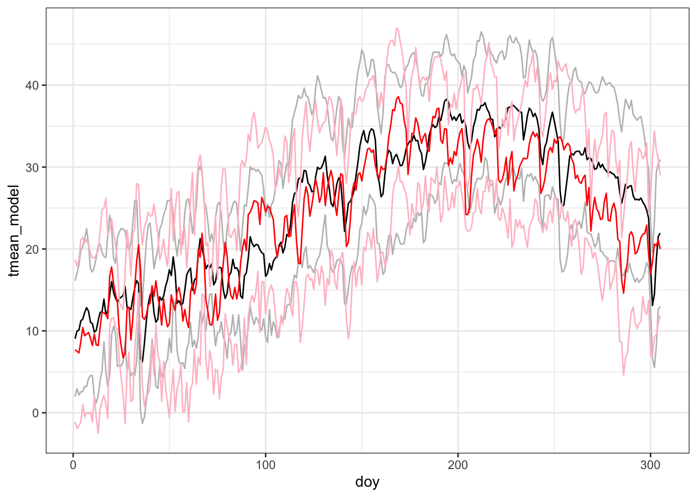
Lets get some truth to compare our model to data measured at a weather station.
The AZMet data format is described here: https://cals.arizona.edu/azmet/raw2003.htm. On that page you can see that these are the columns we are interested in:
| col | variable |
|---|---|
| 2 | day of year |
| 4 | max temperature |
| 5 | min temperature |
| 6 | mean temperature |
We can read in the data and rename the columns of interest in the following steps:
mac_azmet <- read.csv('https://cals.arizona.edu/azmet/data/0621rd.txt', header = FALSE) %>%
select(doy = V2, tmean = V6, tmax = V4, tmin = V5)Now, lets join the data frames. We will use the suffix to identify model (DayMet) and observed station (AZMet) data.
comparison <- mac_daymet %>%
left_join(mac_azmet, by = 'doy', suffix = c('_model', '_obs')) %>%
filter(!is.na(tmean_obs))
head(comparison)## doy tmean_model tmax_model tmin_model tmean_obs tmax_obs tmin_obs
## 1 1 9.04 16.1 1.98 7.7 18.7 -1.1
## 2 2 9.97 17.0 2.94 7.5 17.9 -1.9
## 3 3 10.09 18.0 2.16 7.3 18.7 -1.6
## 4 4 11.22 19.9 2.57 8.7 21.1 -1.1
## 5 5 11.44 20.3 2.58 10.4 21.4 1.0
## 6 6 12.25 21.3 3.23 9.4 20.7 -0.5Just looking at the table, what do you notice about the observed and modeled temperatures?
- looks like the tmax observed is generally higher and tmin is generally lower!
- the station observed five days below freezing in the first six days of the year!
Now, lets see how the model and data compare:
ggplot(data = comparison) +
geom_line(aes(doy, tmean_model)) +
geom_line(aes(doy, tmin_model), color = 'grey') +
geom_line(aes(doy, tmax_model), color = 'grey') +
geom_line(aes(doy, tmean_obs), color = 'red') +
geom_line(aes(doy, tmin_obs), color = 'pink') +
geom_line(aes(doy, tmax_obs), color = 'pink') 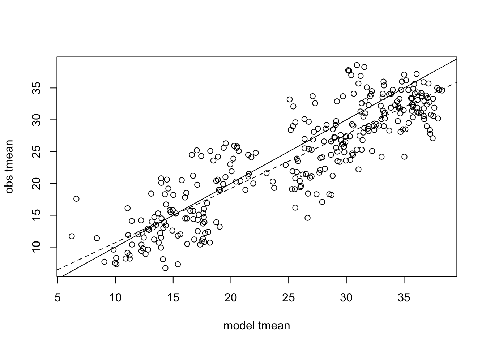
ggplot(data = comparison) +
geom_point(aes(doy, tmean_model - tmean_obs))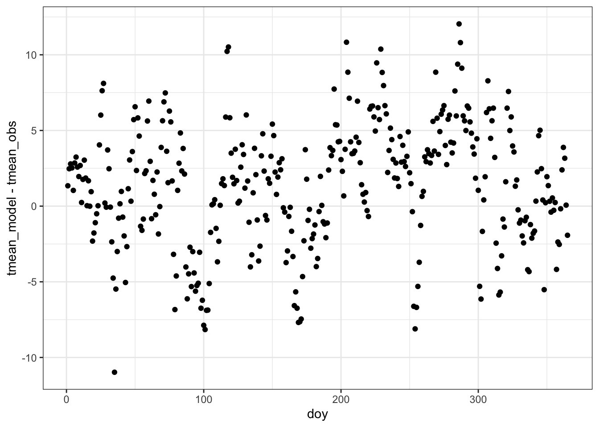
ggplot(data = comparison) +
geom_point(aes(tmean_model, tmean_obs)) +
geom_abline(aes(intercept = 0, slope = 1)) +
ylim(0, 40) +
xlim(0, 40)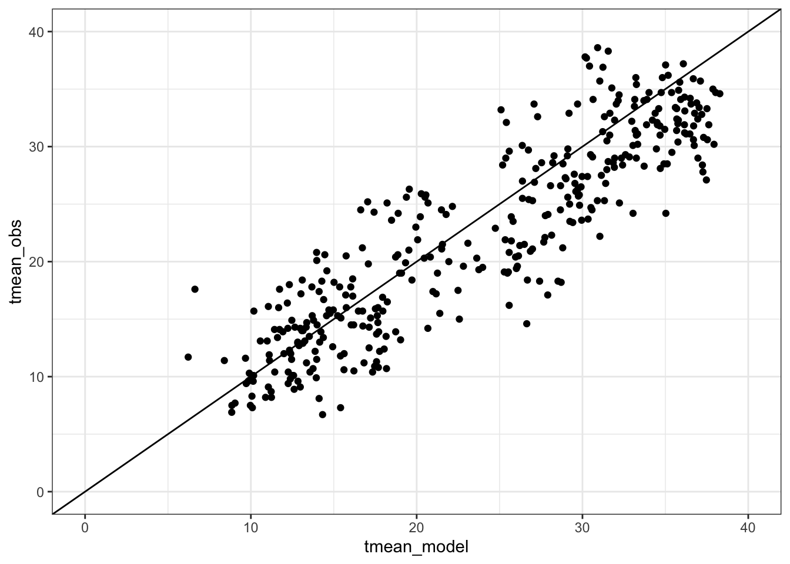
4.2.1 Statistical tests of model performance
We are going to talk about a set of key metrics for comparing models to data:
Slope, RMSE, R^2, Bias, SD ratio
4.2.1.1 Slope
The slope of regression of predicted on observed: \(Y_{obs}= bY_{mod}+\epsilon\). Does slope \(b=1\)?
mod <- comparison$tmean_model
obs <- comparison$tmean_obs
reg <- lm(obs~ mod)
plot(mod, obs, xlab = 'model tmean', ylab = 'obs tmean') +
abline(0,1) +
abline(coef(reg), lty = 2) 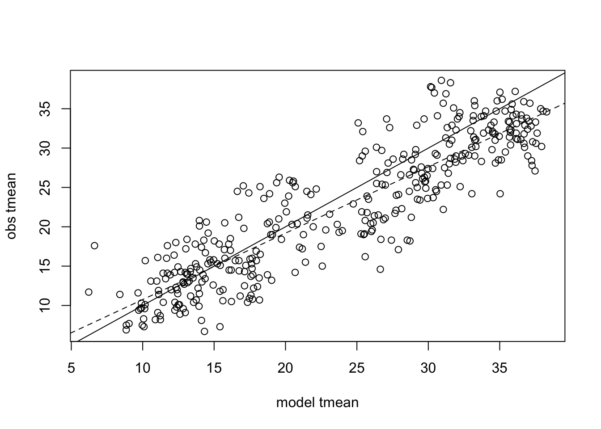
## integer(0)summary(reg)##
## Call:
## lm(formula = obs ~ mod)
##
## Residuals:
## Min 1Q Median 3Q Max
## -10.194 -2.682 -0.295 2.338 10.197
##
## Coefficients:
## Estimate Std. Error t value Pr(>|t|)
## (Intercept) 2.3081 0.5647 4.09 5.4e-05 ***
## mod 0.8441 0.0223 37.91 < 2e-16 ***
## ---
## Signif. codes: 0 '***' 0.001 '**' 0.01 '*' 0.05 '.' 0.1 ' ' 1
##
## Residual standard error: 3.81 on 363 degrees of freedom
## Multiple R-squared: 0.798, Adjusted R-squared: 0.798
## F-statistic: 1.44e+03 on 1 and 363 DF, p-value: <2e-16Does the regression model includes the 1:1 line? Why is the P-value so low?
coef(reg)## (Intercept) mod
## 2.308 0.844confint(reg)## 2.5 % 97.5 %
## (Intercept) 1.2 3.418
## mod 0.8 0.888Is the slope 1:1?
What about for tmin and tmax?
summary(lm(tmin_obs ~ tmin_model, data = comparison))
summary(lm(tmax_obs ~ tmax_model, data = comparison))4.2.1.2 RMSE Root Mean Square Error
This is the most common model metric. It is the standard deviation of the residuals.
\[RMSE=\sqrt{\frac{1}{n}(Y_{model}-Y_{obs})^2}\]
RMSE <- sqrt(mean((mod - obs)^2))
RMSE ## [1] 4.28Sometimes you want a “Normalized” estimate of model error. That way the magnitude of the error is on the same scale as the observations. There are many ways to do this, a common approach is to divide by the mean of the observations. \(NRMSE=RMSE/\bar{Y}_{obs}\) is equivalent to coefficient of variance \(CV=\frac{\sigma}{\bar{x}}\).
## to normalize, divide by sd(obs)
NRMSE <- RMSE/sd(obs)Other approaches to normalization:
- \(RMSE/sd(obs)\)
- \(RMSE/\bar{Y_{obs}}\)
- \(RMSE/IQR\)
4.2.1.3 \(R^2\) Corellation Coefficient
When comparing models to data, it is common to calculate the Correlation Coefficient in terms of deviation from the 1:1 line
\[R^2=1-\frac{\sum{(Y_{mod}-Y_{obs})^2}}{\sum{(Y_{obs}-\bar{Y}_{obs})^2}}\]
cor(mod, obs)## [1] 0.894cor.test(mod, obs)##
## Pearson's product-moment correlation
##
## data: mod and obs
## t = 38, df = 363, p-value <2e-16
## alternative hypothesis: true correlation is not equal to 0
## 95 percent confidence interval:
## 0.871 0.912
## sample estimates:
## cor
## 0.8944.2.1.4 Bias
Do you over or under predict?
\[Y_{model}-Y_{obs}\]
mean(mod - obs)## [1] 1.39# normalized
mean(mod - obs)/mean(obs)## [1] 0.0623It is also useful to visualize and compute statistics on these differences.
hist(mod-obs)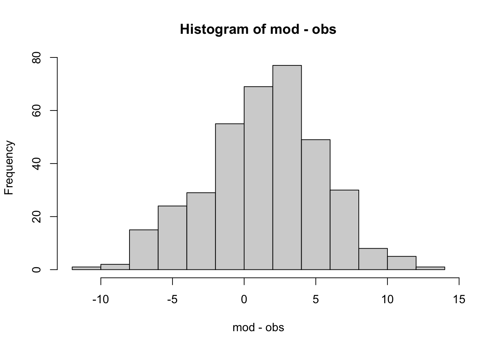
What fraction of the time is the model above the observation?
sum(mod > obs) / length(obs)## [1] 0.6554.2.1.5 Ratio of variances
Does the model capture the observed variance? Often a model will have lower variances … why?
\[\frac{SD_{Y_{model}}}{SD_{Y_{obs}}}\]
sd(obs) / sd(mod)## [1] 0.9454.2.1.6 Taylor Diagram - three metrics in two dimensions
A Taylor Diagram allows you to plot three metrics of model performance - the RMSE, R^2, and SD ratio in two dimensions, taking advantage of the mathematical relationships among these scores.
It is common to plot multiple points representing different models or model parameterizations, also different years or locations that the model is evaluated at. Plotting these as normalized values allows comparison across variables being predicted.
library(plotrix)
taylor.diagram(ref=obs, model = mod, normalize = TRUE, ref.sd = TRUE) 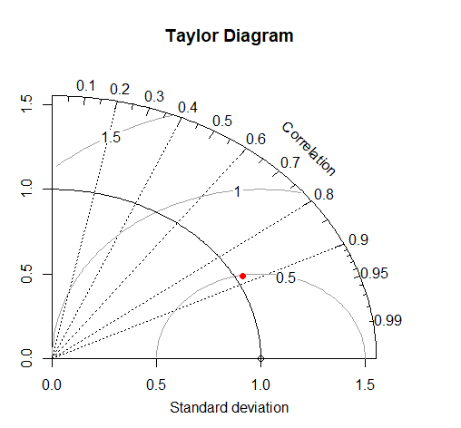
4.3 Simulation Models
Yesterday I introduced the concept and application of simulation models, with examples related to simulating plant growth. In a regression model, it is often possible to see how each parameter relates to the model output (e.g. slope, intercept).
For a complex model, it is often not possible to understand the high level dynamics of the system by analyzing the mathematics. Another approach is to treat the model as a ‘black box’. Then we can treat the black box as an experimental system, purturb it and see how it responds.
Lets look at this in more detail.
4.3.1 Example: A leaf level model of photosynthesis
Based on the coupled C4 photosynthesis - conductance model developed by Collatz and Ball Berry
G. Collatz, M. Ribas-Carbo, J. Berry. (1992). Coupled photosynthesis-stomatal conductance model for leaves of C4 plants. Australian Journal of Plant Physiology 519–538.
Water transpiration is coupled to photosynthesis through stomatal conductance, since plants need to regulate water loss as they uptake \(CO_2\):
\[g_s = m\frac{A_n h_s}{c_a}p + b\]
Where \(g_s\) is stomatal conducatnce, \(A_n\) is net photosynthesis, \(h_s\) is relative humidity, \(c_a\) is \(CO_2\) at leaf surface.
and Photosynthesis is
\[A_n=min(A_c, A_L)-R_d\] Where Rubisco-limited rate is \(A_c\) and RuBP limited rate is \(A_L\)
\[A_c=V_m\left[\frac{c_i-\Gamma}{c_i+K_c(1+O_2/K_o)}\right]\]
\[A_L=\] This is a non-linear equation with key plant physiological traits:
| Parameter | Description |
|---|---|
| Vmax | maximum carboxylation of Rubisco according to the Collatz model. |
| alpha | alpha parameter according to the Collatz model. Initial slope of the response to Irradiance. |
| kparm | k parameter according to the Collatz model. Initial slope of the response to CO2. |
| theta | theta parameter according to the Collatz model. Curvature for light response. |
| beta | beta parameter according to the Collatz model. Curvature for response to CO2. |
| Rd | Rd parameter according to the Collatz model. Dark respiration. |
| b0 | intercept for the Ball-Berry stomatal conductance model. |
| b1 | slope for the Ball-Berry stomatal conductance model. |
The rate of photosynthesis is determined by environmental factors:
| Parameter | Description |
|---|---|
| Tl | temperature of the leaf (Celsius). |
| RH | relative humidity (as a fraction, i.e. 0-1). |
| Qp | quantum flux (direct light), (micro mol m-2 s-1). |
| Catm | Atmospheric CO2 in ppm (or micromol/mol). |
In the end:
\[[Gs, A, C_i]=f(T, RH, Light, CO_2, v_{max}, \alpha, k, \theta, R_d, b_0, b_1)\]
4.3.2 Let’s run this model!
First, lets load some meteorological data:
library(BioCro) #devtools::install_github('ebimodeling/biocro')
library(lubridate)
library(ggplot2)
data("weather04")
time <- ymd('2004-01-01') + days(weather04$doy-1) + hours(weather04$hour)
par <- weather04$solarR
rh <- weather04$RH
temp <- weather04$DailyTemp.CNow, estimate photosynthesis rate at each time step. This is isn’t the entire model - just what would be happening to the leaf of a plant with C4 photosynthesis in full sunlight.
A <- c4photo(Qp = par, Tl = temp, RH = rh)$Assim
pairs(data.frame(A, par, temp, rh))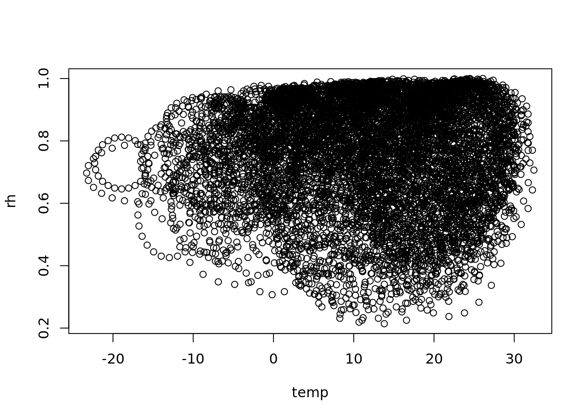
## whoa this is wierd! What is going on?
plot(temp, rh)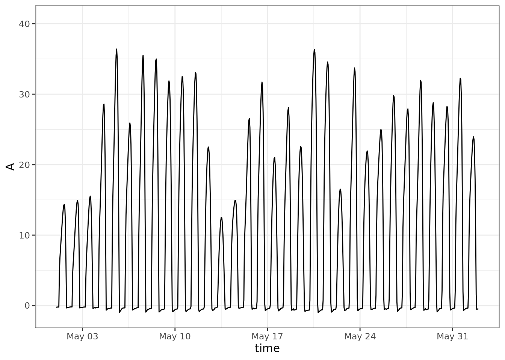
a strange scaling algorithm, interpolating from daily to hourly
see also https://rpubs.com/dlebauer/metdriver_comparisonslibrary(ggplot2)
ggplot()+
geom_line(aes(time, A)) +
scale_x_datetime(limits = ymd_h(c('2004-05-01 0', '2004-06-01 23')))## Warning: Removed 7992 row(s) containing missing values (geom_path).ggplot()+
geom_line(aes(time, rh)) +
scale_x_datetime(limits = ymd_h(c('2004-05-01 0', '2004-06-01 23')))## Warning: Removed 7992 row(s) containing missing values (geom_path).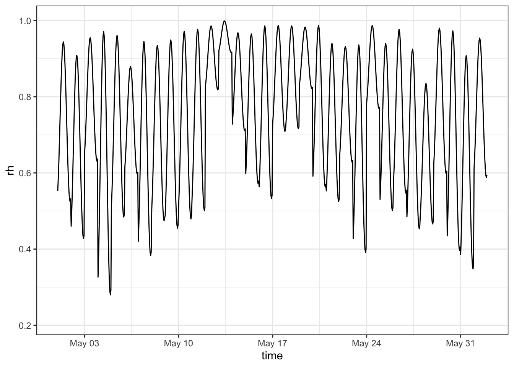
question: is f(mean(X)) = mean(f(X))?
testQp <- 11:20*100
testTl <- 21:30
testRH <- 21:30/50
A1 <- c4photo(Qp = mean(testQp),
Tl = mean(testTl),
RH = mean(testRH))
A2 <- lapply(c4photo(Qp = testQp, Tl = testTl, RH = testRH), mean)
dplyr::bind_rows(A1 = A1, A2 = A2)## # A tibble: 2 × 4
## Gs Assim Ci GrossAssim
## <dbl> <dbl> <dbl> <dbl>
## 1 239. 31.3 171. 32.1
## 2 243. 31.4 173. 32.2Why are these different?
For non-linear functions see Jensen’s Inequality (Wikipedia)
This means - be careful when and how you use averages - everywhere!!! Spatial and temporal downscaling is how crop modelers deal with lower resolution atmospheric model forecasts. For example the most recent IPCC 100 y climate forecasts were generated on ~100km grids (Taylor et al 2012), thus one data point may simultaneously represent a month that is \(60^o\)F and foggy in San Fransicsco and \(100^o\)F and dry in Davis, CA. At the same time, crop models need to run on local hourly data while also capturing the uncertainty represented by within and across model variability.
4.3.2.1 Model sensitivity
Next, we are going to look at the sensitivity of the model to each of the different weather parameters, holding the others at their mean
meanQp <- mean(par)
meanTl <- mean(temp)
meanRH <- mean(rh)
plot(1:100/100, c4photo(Qp = rep(meanQp, 100),
Tl = rep(meanTl, 100),
RH = 1:100/100)$Assim,
type = 'l', ylab = 'Assim', xlab = 'RH')plot(1:100/4, c4photo(Qp = rep(meanQp, 100),
Tl = 1:100/4,
RH = rep(meanRH, 100))$Assim,
type = 'l', ylab = 'Assim', xlab = 'RH')
4.3.2.2 Monte Carlo Error propagation
Given a model parameters represented as variables, e.g.
\[ V_{cmax}\sim N(45,2)\\ Rd\sim N(1, 0.1) b1 \sim N(4,1) \]
What is expected uncertainty in model predictions of photosynthesis (A = assimilation)
Lets take some samples from these distributions
set.seed(100)
n <- 1000
vmax <- rnorm(n, 45, 2)
Rd <- rnorm(n, 1, 0.10)
b1 <- rnorm(n, 4, 1)Now we can take a look at them
x <- 25:75
ggplot() +
geom_histogram(aes(vmax, y = ..density..), proability = TRUE) +
geom_line(aes(x, dnorm(x, 45, 2)))## Warning: Ignoring unknown parameters: proability## `stat_bin()` using `bins = 30`. Pick better value with `binwidth`.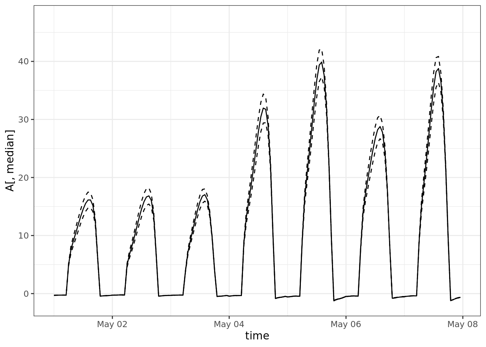
x <- 1:200/100
ggplot() +
geom_histogram(aes(Rd, y = ..density..), proability = TRUE) +
geom_line(aes(x, dnorm(x, 1, 0.1)))## Warning: Ignoring unknown parameters: proability## `stat_bin()` using `bins = 30`. Pick better value with `binwidth`.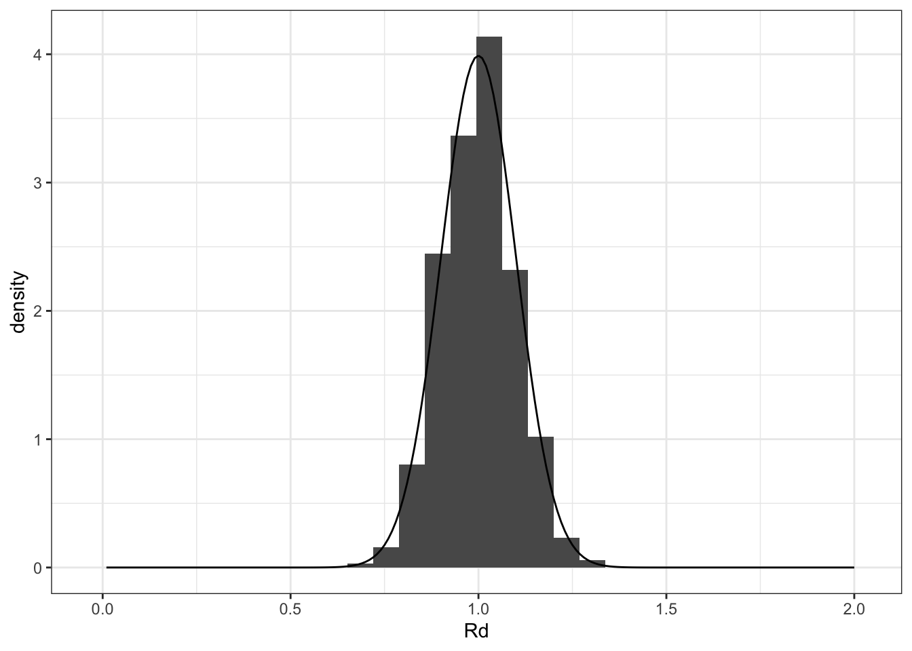
Next, we are going to propagate the parameter variance to see how much of an effect it has on the model output variance:
### sample given time series of met
A <- matrix(nrow = length(time), ncol = 1000)
for(i in 1:1000){
A[,i] <- c4photo(Qp = par, Tl = temp, RH = rh, vmax = vmax[i], Rd = Rd[i], b1=b1[i])$Assim
}
# take a look at the matrix ..
# image(A, xlab = 'time', ylab = 'sample')
## shows an annual cycle of photosynthesis
median <- which.min(abs(quantile(colMeans(A), 0.50)-colMeans(A)))
ucl <- which.min(abs(quantile(colMeans(A), 0.975)-colMeans(A)))
lcl <- which.min(abs(quantile(colMeans(A), 0.025)-colMeans(A)))
ggplot() +
# geom_smooth(aes(time, A))+
geom_line(aes(time, A[,median])) +
geom_line(aes(time, y = A[,lcl]), linetype = 2) +
geom_line(aes(time, y = A[,ucl]), linetype = 2) +
scale_x_datetime(limits = ymd_h(c('2004-05-01 0', '2004-05-07 23')))## Warning: Removed 8592 row(s) containing missing values (geom_path).
## Warning: Removed 8592 row(s) containing missing values (geom_path).
## Warning: Removed 8592 row(s) containing missing values (geom_path).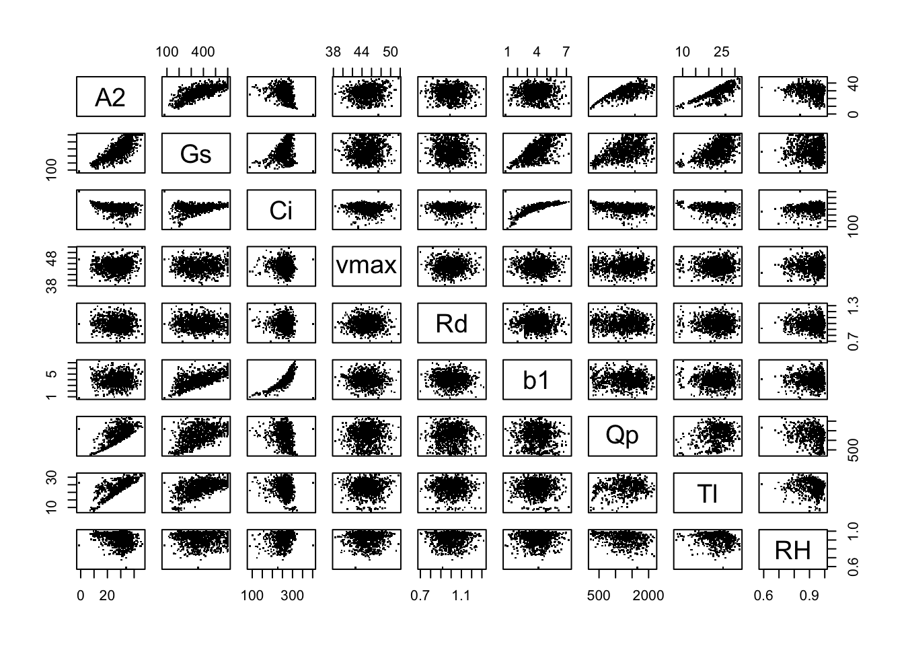
4.3.3 Variance Decomposition - which of these parameters are most important?
Response of interest is the total assimilation
a_total <- colMeans(A)
summary(aov(a_total ~ vmax + Rd + b1))## Df Sum Sq Mean Sq F value Pr(>F)
## vmax 1 22.66 22.66 8593 <2e-16 ***
## Rd 1 2.55 2.55 966 <2e-16 ***
## b1 1 0.40 0.40 153 <2e-16 ***
## Residuals 996 2.63 0.00
## ---
## Signif. codes: 0 '***' 0.001 '**' 0.01 '*' 0.05 '.' 0.1 ' ' 14.3.4 Propagate met and Use met as a variable, sample over variation within the hour
To answer the question - if I were to step out and look at the plants in the summer, how fast would they be growing?
This time, instead of sampling from a parameterized distribution, I am going to sample over the middle (hours 10-4) of days in the middle of the year (approx. summer, day of year 120-240)
### sample over met variability
A2 <- Gs <- Ci <- Qp <- Tl <- RH <- vector(length = 1000)
for(i in 1:1000){
day <- sample(120:240, size = 1)
hour <- sample(10:16, size = 1)
j <- day * 24 + hour
Qp[i] <- par[j]
Tl[i] <- temp[j]
RH[i] <- rh[j]
res <- c4photo(Qp = Qp[i], Tl = Tl[i], RH = RH[i], vmax = vmax[i], Rd = Rd[i], b1=b1[i])
A2[i] <- res$Assim
Gs[i] <- res$Gs
Ci[i] <- res$Ci
}
hist(A2)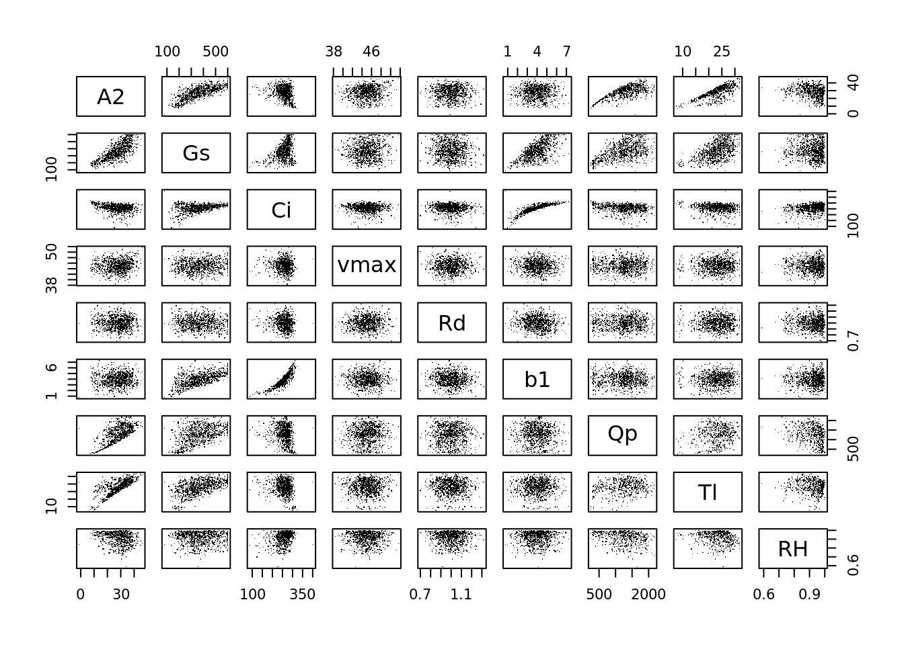
Equivalent of sensitivity analysis: (where A2, Gs, Ci are response variables)
pairs(data.frame(A2, Gs, Ci, vmax, Rd, b1, Qp, Tl, RH), pch = '.')The lm is pretty much a sensitivity analysis: what is the slope of the effect of inputs on the output of the model.
summary(lm(A2 ~ vmax + Rd + b1 + Qp + Tl + RH))##
## Call:
## lm(formula = A2 ~ vmax + Rd + b1 + Qp + Tl + RH)
##
## Residuals:
## Min 1Q Median 3Q Max
## -35.33 -1.35 0.71 1.61 6.75
##
## Coefficients:
## Estimate Std. Error t value Pr(>|t|)
## (Intercept) -2.61e+01 2.42e+00 -10.78 < 2e-16 ***
## vmax 2.94e-01 3.94e-02 7.47 1.8e-13 ***
## Rd 5.76e-02 8.29e-01 0.07 0.94
## b1 3.67e-01 7.75e-02 4.73 2.6e-06 ***
## Qp 1.05e-02 1.93e-04 54.54 < 2e-16 ***
## Tl 1.08e+00 1.86e-02 57.99 < 2e-16 ***
## RH 9.66e-01 1.28e+00 0.76 0.45
## ---
## Signif. codes: 0 '***' 0.001 '**' 0.01 '*' 0.05 '.' 0.1 ' ' 1
##
## Residual standard error: 2.56 on 993 degrees of freedom
## Multiple R-squared: 0.895, Adjusted R-squared: 0.894
## F-statistic: 1.41e+03 on 6 and 993 DF, p-value: <2e-16The analysis of variance partitions the variance - how much if the total variance in A2 is contributed by each of the following parameters (recall that the domain for met variables is << the domain for physiological parameters …
What would happen if we used a whole year of meteorological data instead of the one hour of met data that we used?
summary(aov(A2 ~ vmax + Rd + b1 + Qp + Tl + RH))## Df Sum Sq Mean Sq F value Pr(>F)
## vmax 1 932 932 142.26 <2e-16 ***
## Rd 1 21 21 3.21 0.074 .
## b1 1 33 33 5.01 0.025 *
## Qp 1 32153 32153 4906.97 <2e-16 ***
## Tl 1 22380 22380 3415.44 <2e-16 ***
## RH 1 4 4 0.57 0.450
## Residuals 993 6507 7
## ---
## Signif. codes: 0 '***' 0.001 '**' 0.01 '*' 0.05 '.' 0.1 ' ' 1tidy(aov(Gs ~ vmax + Rd + b1 + Qp + Tl + RH))
tidy(aov(Ci ~ vmax + Rd + b1 + Qp + Tl + RH))4.3.5 References
Taylor, K.E., R.J. Stouffer, G.A. Meehl: An Overview of CMIP5 and the experiment design.” Bull. Amer. Meteor. Soc., 93, 485-498, doi:10.1175/BAMS-D-11-00094.1, 2012. http://journals.ametsoc.org/doi/pdf/10.1175/BAMS-D-11-00094.1
Humphries S and Long SP (1995) WIMOVAC - a software package for modeling the dynamics of the plant leaf and canopy photosynthesis. Computer Applications in the Bioscience 11(4):361-371.
Miguez FE, Zhu XG, Humphries S, Bollero GA, Long SP (2009) A semimechanistic model predicting the growth and production of the bioenergy crop Miscanthus × giganteus: description, parameterization and validation. Global Change Biology Bioenergy 1: 282-296.
Wang D, Jaiswal D, Lebauer DS, Wertin TM, Bollero GA, Leakey ADB, Long SP (2015) A physiological and biophysical model of coppice willow (Salix spp.) production yields for the contiguous USA in current and future climate scenarios. Plant, cell & environment, 38(9), 1850-1865.
Thornton, M.M., R. Shrestha, Y. Wei, P.E. Thornton, S. Kao, and B.E. Wilson. 2020. Daymet: Daily Surface Weather Data on a 1-km Grid for North America, Version 4. ORNL DAAC, Oak Ridge, Tennessee, USA. https://doi.org/10.3334/ORNLDAAC/1840
Daymet: Daily Surface Weather Data on a 1-km Grid for North America, Version 4 https://doi.org/10.3334/ORNLDAAC/1840